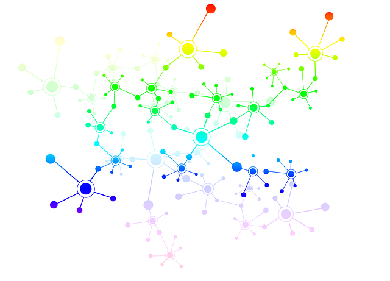
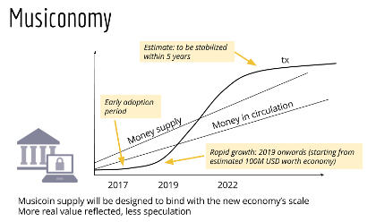

The Currency
A decentralized global currency for 21st century and beyond.
Money system
Musicoin ($MUSIC) is a money system running across a global computer network generating blocks of data based on transactions. The technology behind this is called Blockchain, which has been proven by Bitcoin over the past nine years to be supremely secure, immutable, and transparent.
Money Supply
The annual growth in supply of coins has been carefully set to follow the anticipated rate of growth of music publishing and consumption. Although there is no finite limit to the number of coins that can be mined, a combination of market forces, mining difficulty and network dynamics will ensure that supply is sufficient to keep up with demand such that a fairly stable price and value in relation to other currencies will be achieved.
Symbol
The currency symbol of Musicoin is
$MUSIC
Value
While it is ultimately the market that defines the inherent value of Musicoin, MC is closely linked with actual music consumption. The fundamental unit of MC is based on a Pay-Per-Play methodology in which one stream of a song is valued at 1 MC.
Can MC be used elsewhere?
It is envisioned that MC will be tradable for other goods and services beyond music consumption such as artist merchandise, concert tickets and perhaps even non-music related items.